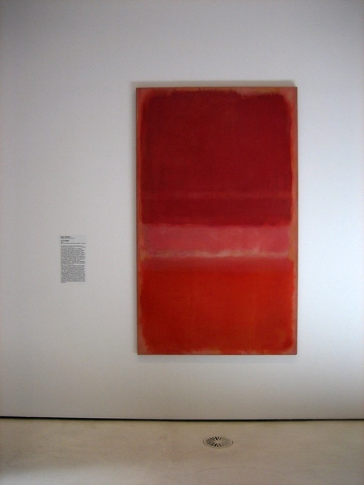

During Mark Rothko’s early career, he was visiting a friend in the Art Students League of New York, while he was there, he noticed some of the students sketching a model, which started his career as an artist. In a response to World War 2, he started experimenting with different themes such as surrealism to express the tragedy of the war.
In 1943, Mark had a divorce with his wife Edith Sachar, this led him into a spiraling depression, which led to him changing his art style from surrealism to “”multiform”. Multiform is what signified his transition to a more mature abstract style. His style switched to a more simple style, he created his own art movement with simplified shapes, and is known as an “abstract expressionist”.
Some of his most expensive paintings include orange, red, and yellow. In 1961, one art piece sold for 86 million dollars. Also, his No. 1 sold for 75 million, and his No. 10 sold for 81 million dollars.
Finally, in his later, dark years, he suffered from severe depression, and his addiction to alcohol only made it worse. On February 25, 1970, at the age of 66, he committed suicide. He was overdosed and had a cut in his right arm.
Mark Rothko worked on art for 5 decades, and introduced a new type of abstract art. He is best known for color field paintings with sections of vast areas of one color. Mark Rothko created simple yet interesting art pieces and was the king of his art style. Although he never liked the idea of his paintings being used for decoration, art museums display his art pieces.